T005 · 化合物聚类¶
注： 本教程是 TeachOpenCADD 的一部分。TeachOpenCADD 是一个旨在教授领域专用技能，并提供可作为研究项目起点的流程模板的平台。
作者：
Gizem Spriewald, CADD 研讨课, 2017, Charité/FU Berlin
Calvinna Caswara, CADD 研讨课, 2018, Charité/FU Berlin
Jaime Rodríguez-Guerra, 2019-2020, Volkamer 实验室, Charité
教程 T005：本教程是 第一篇 TeachOpenCADD 论文中描述的 TeachOpenCADD 流程的一部分，该流程包含教程 T001-T010。
本教程的目标¶
相似的化合物可能会结合相同的靶标并表现出相似的效果。 基于这一相似性质原理，化合物相似性可以通过聚类来建立化学基团。 通过这种聚类，还可以从大量候选化合物中选择多样化的一组化合物，以进行进一步的实验测试。
理论 部分内容¶
聚类和 Jarvis-Patrick 算法简介
Butina 聚类详解
挑选多样化化合物
实践 部分内容¶
使用 Butina 算法进行聚类
可视化聚类结果
挑选最终的化合物列表
附加：运行时间分析
参考文献¶
Butina, D. Unsupervised Data Base Clustering Based on Daylight’s Fingerprint and Tanimoto Similarity: A Fast and Automated Way To Cluster Small and Large Data Set. J. Chem. Inf. Comput. Sci. (1999)
Leach, Andrew R., Gillet, Valerie J. An Introduction to Chemoinformatics (2003)
[1]:
import sys
if "google.colab" in sys.modules:
%pip install teachopencadd --no-deps -q
!teachopencadd -d 5
%pip uninstall teachopencadd -y -q
%pip install -qr requirements.txt
理论¶
聚类和 Jarvis-Patrick 算法简介¶
聚类可以定义为_将一组对象分组，使得同一组（称为簇）中的对象彼此之间的相似度（在某种意义上）高于与其他组（簇）中对象的相似度_。
药物研究中的化合物聚类通常基于化合物之间的化学或结构相似性，以找到共享性质的基团，并设计一个多样化且有代表性的数据集用于进一步分析。
一般步骤：
方法基于通过相邻点之间的相似性对数据进行聚类。
在化学信息学中，化合物通常被编码为分子指纹，相似性可由 Tanimoto 相似性描述（参见 教程 T004）。
快速回顾：
指纹是二值向量，其中每一位表示分子内特定子结构片段的存在或不存在。
相似性（或距离）矩阵：由二值指纹表示的每对分子之间的相似性最常使用 Tanimoto 系数来量化，该系数测量共同特征（位）的数量。
Tanimoto 系数的取值范围从零（无相似性）到一（高相似性）。
有许多可用的聚类算法，其中 Jarvis-Patrick 聚类 是制药领域使用最广泛的算法之一。
Jarvis-Patrick 聚类算法由两个参数 \(K\) 和 \(K_{min}\) 定义：
计算每个分子的 \(K\) 个最近邻居的集合。
如果两个分子满足以下条件，则聚类在一起：
它们在彼此的最近邻居列表中
它们至少有 \(K_{min}\) 个共同的 \(K\) 个最近邻居。
Jarvis-Patrick 聚类算法是确定性的，并且能够在几小时内处理大量分子集合。然而，其缺点在于该方法倾向于产生大量异质性聚簇（参见上面的 Butina 聚类）。
更多聚类算法也可以在 scikit-learn 聚类模块 中找到。
Butina 聚类详解¶
Butina 聚类（J. Chem. Inf. Model. (1999), 39 (4), 747）旨在识别较小但同质的聚簇，其前提是（至少）簇中心与簇中所有其他分子的相似度高于给定阈值。
以下是该聚类方法的关键步骤（参见流程图）：
1. 数据准备和化合物编码¶
为了识别化学相似性，输入数据中的化合物（例如以 SMILES 格式给出）将被编码为分子指纹，例如 RDK5 指纹，这是一种基于子图的指纹，类似于著名的 Daylight 指纹（在原始论文中使用过）。
2. Tanimoto 相似性（或距离）矩阵¶
两个指纹之间的相似性使用 Tanimoto 系数计算。
包含所有可能分子/指针对之间 Tanimoto 相似性的矩阵（\(n \times n\) 相似性矩阵，其中 \(n\)=分子数，仅使用上三角矩阵）。
同样，也可以计算距离矩阵（\(1 - similarity\)）。
3. 聚类分子：簇中心和排除球¶
注意：如果分子与簇中心的距离低于指定的截止值（使用距离矩阵时），或者它们与簇中心的相似度高于指定的截止值（使用相似性矩阵时），则它们将被聚类在一起。
识别潜在的簇中心
簇中心是给定簇内具有最多邻居数量的分子。
标注邻居：对于每个分子，计算所有 Tanimoto 距离低于给定阈值的分子。
按其邻居数量降序对分子进行排序，以便潜在的簇中心（即具有最多邻居数量的化合物）位于文件顶部。
基于排除球进行聚类
从排序列表中的第一个分子（簇中心）开始。
所有 Tanimoto 指数高于或等于聚类截止值的分子（在使用相似性的情况下）将成为该簇的成员。
每个被识别为给定簇成员的分子都被标记并从后续比较中移除。因此，被标记的分子不能再成为另一个簇的簇中心或其他簇的成员。这个过程就像在新形成的簇周围放置了一个排除球。
一旦列表中的第一个化合物找到了其所有邻居，列表顶部第一个可用的（即未被标记的）化合物就成为新的簇中心。
对列表中所有其他未被标记的分子重复相同的过程。
在聚类过程结束时未被标记的分子成为单点（singletons）。
注意，在给定的 Tanimoto 相似性指数下，一些被分配为单点的分子可能有邻居，但这些邻居已被更强的簇中心排除。
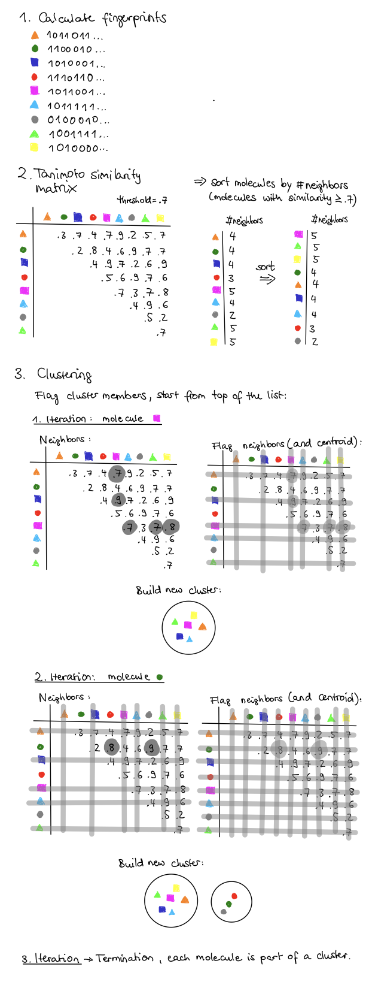
图 1： Butina 聚类算法的理论示例，由 Calvinna Caswara 绘制。
挑选多样化化合物¶
寻找代表性的化合物组是制药行业中经常使用的概念。
假设我们进行了一个虚拟筛选活动，但只有有限的资源来对少数化合物进行实验验证测定。
为了从这次筛选中获得尽可能多的信息，我们希望选择一个多样化的集合。因此，我们从潜在活性化合物列表中的每个化学系列中挑选一个代表。
另一种场景是选择一个系列以获取关于构效关系（SAR）的信息；即，分子中的微小结构变化如何影响_体外_活性。
实践¶
使用 Butina 算法进行聚类¶
应用示例来自 S. Riniker 和 G. Landrum 的 TDT 教程 notebook。
加载数据并计算指纹¶
在此部分中，准备数据并计算指纹。
[2]:
import time
import random
from pathlib import Path
import pandas as pd
import numpy as np
import matplotlib.pyplot as plt
from rdkit import Chem
from rdkit import DataStructs
from rdkit.ML.Cluster import Butina
from rdkit.Chem import Draw
from rdkit.Chem import rdFingerprintGenerator
HERE = Path(_dh[-1])
DATA = HERE / "data"
random.seed(0)
np.random.seed(0)
[3]:
# 加载并查看数据
# 从 **教程 T002** 获取的过滤后数据
compound_df = pd.read_csv(
DATA / "EGFR_compounds_lipinski.csv",
index_col=0,
)
print("Dataframe shape:", compound_df.shape)
compound_df.head()
Dataframe shape: (4635, 10)
[3]:
| molecule_chembl_id | IC50 | units | smiles | pIC50 | molecular_weight | n_hba | n_hbd | logp | ro5_fulfilled | |
|---|---|---|---|---|---|---|---|---|---|---|
| 0 | CHEMBL63786 | 0.003 | nM | Brc1cccc(Nc2ncnc3cc4ccccc4cc23)c1 | 11.522879 | 349.021459 | 3 | 1 | 5.2891 | True |
| 1 | CHEMBL35820 | 0.006 | nM | CCOc1cc2ncnc(Nc3cccc(Br)c3)c2cc1OCC | 11.221849 | 387.058239 | 5 | 1 | 4.9333 | True |
| 2 | CHEMBL53711 | 0.006 | nM | CN(C)c1cc2c(Nc3cccc(Br)c3)ncnc2cn1 | 11.221849 | 343.043258 | 5 | 1 | 3.5969 | True |
| 3 | CHEMBL66031 | 0.008 | nM | Brc1cccc(Nc2ncnc3cc4[nH]cnc4cc23)c1 | 11.096910 | 339.011957 | 4 | 2 | 4.0122 | True |
| 4 | CHEMBL53753 | 0.008 | nM | CNc1cc2c(Nc3cccc(Br)c3)ncnc2cn1 | 11.096910 | 329.027607 | 5 | 2 | 3.5726 | True |
[4]:
# 从 SMILES 创建分子并存储在数组中
compounds = []
# .itertuples() 每行返回一个 (index, column1, column2, ...) 元组
# 我们不需要索引，所以用 _ 代替
# 注意我们如何对 DataFrame 进行切片，只取当前需要的两列
for _, chembl_id, smiles in compound_df[["molecule_chembl_id", "smiles"]].itertuples():
compounds.append((Chem.MolFromSmiles(smiles), chembl_id))
compounds[:5]
[4]:
[(<rdkit.Chem.rdchem.Mol at 0x7f1c005418c0>, 'CHEMBL63786'),
(<rdkit.Chem.rdchem.Mol at 0x7f1c00541930>, 'CHEMBL35820'),
(<rdkit.Chem.rdchem.Mol at 0x7f1c005419a0>, 'CHEMBL53711'),
(<rdkit.Chem.rdchem.Mol at 0x7f1c00541a10>, 'CHEMBL66031'),
(<rdkit.Chem.rdchem.Mol at 0x7f1c00541af0>, 'CHEMBL53753')]
[5]:
# 为所有分子创建指纹
rdkit_gen = rdFingerprintGenerator.GetRDKitFPGenerator(maxPath=5)
fingerprints = [rdkit_gen.GetFingerprint(mol) for mol, idx in compounds]
# 我们有多少个化合物/指纹？
print("Number of compounds converted:", len(fingerprints))
print("Fingerprint length per compound:", len(fingerprints[0]))
# NBVAL_CHECK_OUTPUT
Number of compounds converted: 4635
Fingerprint length per compound: 2048
Tanimoto 相似性和距离矩阵¶
现在我们生成了指纹，进入下一步：识别潜在的簇中心。为此，我们定义计算 Tanimoto 相似性和距离矩阵的函数。
[6]:
def tanimoto_distance_matrix(fp_list):
"""计算指纹列表的距离矩阵"""
dissimilarity_matrix = []
# 注意我们故意跳过了列表中的第一个和最后一个元素
# 因为我们不需要它们与自己比较
for i in range(1, len(fp_list)):
# 将当前指纹与列表中之前的所有指纹进行比较
similarities = DataStructs.BulkTanimotoSimilarity(fp_list[i], fp_list[:i])
# Since we need a distance matrix, calculate 1-x for every element in similarity matrix
dissimilarity_matrix.extend([1 - x for x in similarities])
return dissimilarity_matrix
另请参见 [Rdkit-discuss] BulkTanimotoSimilarity。
[7]:
# 示例：计算两个指纹的单一相似性
# NBVAL_CHECK_OUTPUT
sim = DataStructs.TanimotoSimilarity(fingerprints[0], fingerprints[1])
print(f"Tanimoto similarity: {sim:.2f}, distance: {1-sim:.2f}")
Tanimoto similarity: 0.73, distance: 0.27
[8]:
# 示例：计算距离矩阵（距离 = 1 - 相似性）
tanimoto_distance_matrix(fingerprints)[0:5]
[8]:
[0.26996197718631176,
0.26538461538461533,
0.40866873065015474,
0.09345794392523366,
0.31182795698924726]
[9]:
# 附注：这看起来像一个列表而不是矩阵。
# 但这是以列表形式呈现的三角相似性矩阵
n = len(fingerprints)
# 通过 n*(n-1)/2 计算三角矩阵中的元素数
elem_triangular_matr = (n * (n - 1)) / 2
print(
f"Elements in the triangular matrix ({elem_triangular_matr:.0f}) ==",
f"tanimoto_distance_matrix(fingerprints) ({len(tanimoto_distance_matrix(fingerprints))})",
)
# NBVAL_CHECK_OUTPUT
Elements in the triangular matrix (10739295) == tanimoto_distance_matrix(fingerprints) (10739295)
聚类分子：簇中心和排除球¶
在此部分中，我们对分子进行聚类并查看结果。
定义一个聚类函数。
[10]:
def cluster_指纹列表(指纹列表, cutoff=0.2):
"""对指纹进行聚类
Parameters:
指纹列表
cutoff：聚类的阈值
"""
# Calculate Tanimoto distance matrix
distance_matrix = tanimoto_distance_matrix(指纹列表)
# Now cluster the data with the implemented Butina algorithm:
clusters = Butina.ClusterData(distance_matrix, len(指纹列表), cutoff, isDistData=True)
clusters = sorted(clusters, key=len, reverse=True)
return clusters
根据指纹相似性对分子进行聚类。
[11]:
# 对数据集运行聚类过程
clusters = cluster_fingerprints(fingerprints, cutoff=0.3)
# 简要报告聚类的数量及其大小
num_clust_g1 = sum(1 for c in clusters if len(c) == 1)
num_clust_g5 = sum(1 for c in clusters if len(c) > 5)
num_clust_g25 = sum(1 for c in clusters if len(c) > 25)
num_clust_g100 = sum(1 for c in clusters if len(c) > 100)
print("total # clusters: ", len(clusters))
print("# clusters with only 1 compound: ", num_clust_g1)
print("# clusters with >5 compounds: ", num_clust_g5)
print("# clusters with >25 compounds: ", num_clust_g25)
print("# clusters with >100 compounds: ", num_clust_g100)
# NBVAL_CHECK_OUTPUT
total # clusters: 727
# clusters with only 1 compound: 339
# clusters with >5 compounds: 164
# clusters with >25 compounds: 30
# clusters with >100 compounds: 4
[12]:
# 绘制聚类大小
fig, ax = plt.subplots(figsize=(15, 4))
ax.set_xlabel("Cluster index")
ax.set_ylabel("Number of molecules")
ax.bar(range(1, len(clusters) + 1), [len(c) for c in clusters], lw=5);
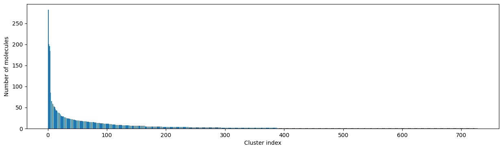
如何选择合理的聚类阈值？¶
由于聚类结果取决于用户选择的阈值，我们将更详细地讨论阈值的选择。
[13]:
for cutoff in np.arange(0.0, 1.0, 0.2):
clusters = cluster_fingerprints(fingerprints, cutoff=cutoff)
fig, ax = plt.subplots(figsize=(15, 4))
ax.set_title(f"Threshold: {cutoff:3.1f}")
ax.set_xlabel("Cluster index")
ax.set_ylabel("Number of molecules")
ax.bar(range(1, len(clusters) + 1), [len(c) for c in clusters], lw=5)
display(fig)
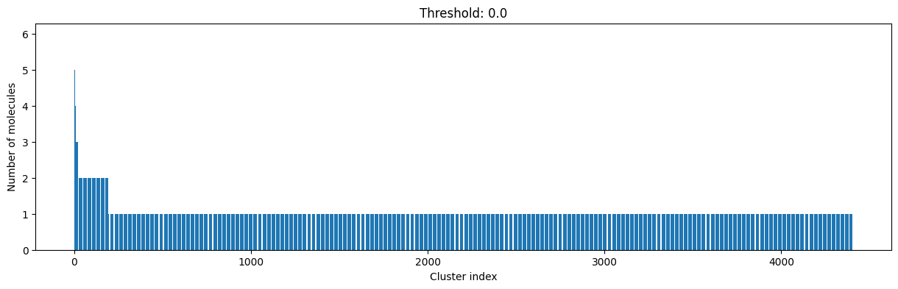


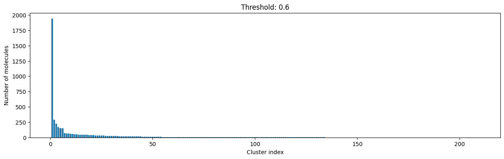
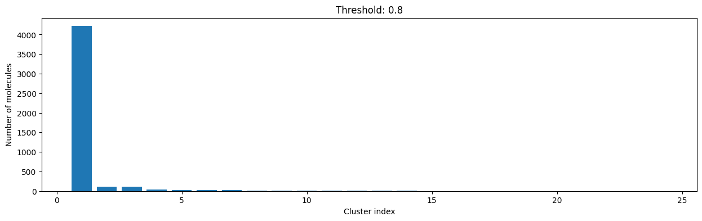

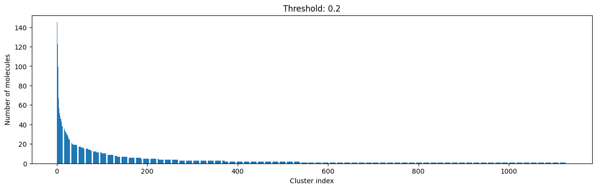
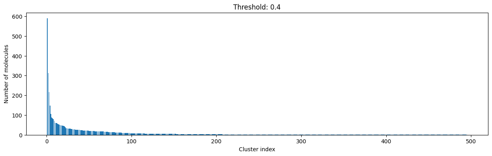


如您所见，阈值（距离截止值）越高，越多的分子被认为是相似的，因此被聚类到更少的簇中。 阈值越低，出现越多的小簇和”单点”。
距离截止值越小，要求化合物之间的相似度越高才能属于同一个簇。
查看上面的图表，我们决定选择距离阈值为 0.2。这样不会有太多单点，且簇的大小呈现平滑的分布，而非极端分布。
[14]:
cutoff = 0.2
clusters = cluster_fingerprints(fingerprints, cutoff=cutoff)
# 绘制聚类大小并保存图表
fig, ax = plt.subplots(figsize=(15, 4))
ax.set_xlabel("Cluster index")
ax.set_ylabel("# molecules")
ax.bar(range(1, len(clusters) + 1), [len(c) for c in clusters])
ax.set_title(f"Threshold: {cutoff:3.1f}")
fig.savefig(
DATA / f"cluster_dist_cutoff_{cutoff:4.2f}.png",
dpi=300,
bbox_inches="tight",
transparent=True,
)
print(
f"Number of clusters: {len(clusters)} from {len(compounds)} molecules at distance cut-off {cutoff:.2f}"
)
print("Number of molecules in largest cluster:", len(clusters[0]))
print(
f"Similarity between two random points in same cluster: {DataStructs.TanimotoSimilarity(fingerprints[clusters[0][0]], fingerprints[clusters[0][1]]):.2f}"
)
print(
f"Similarity between two random points in different cluster: {DataStructs.TanimotoSimilarity(fingerprints[clusters[0][0]], fingerprints[clusters[1][0]]):.2f}"
)
Number of clusters: 1128 from 4635 molecules at distance cut-off 0.20
Number of molecules in largest cluster: 145
Similarity between two random points in same cluster: 0.82
Similarity between two random points in different cluster: 0.22
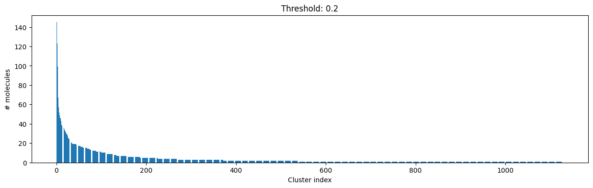
可视化聚类结果¶
最大簇中的十个示例¶
现在，让我们更仔细地查看第一个/最大簇中的前 10 个分子结构。
[15]:
print("最大簇中的十个分子：")
# 绘制分子
Draw.MolsToGridImage(
[compounds[i][0] for i in clusters[0][:10]],
legends=[compounds[i][1] for i in clusters[0][:10]],
molsPerRow=5,
)
Ten molecules from largest cluster:
[15]:
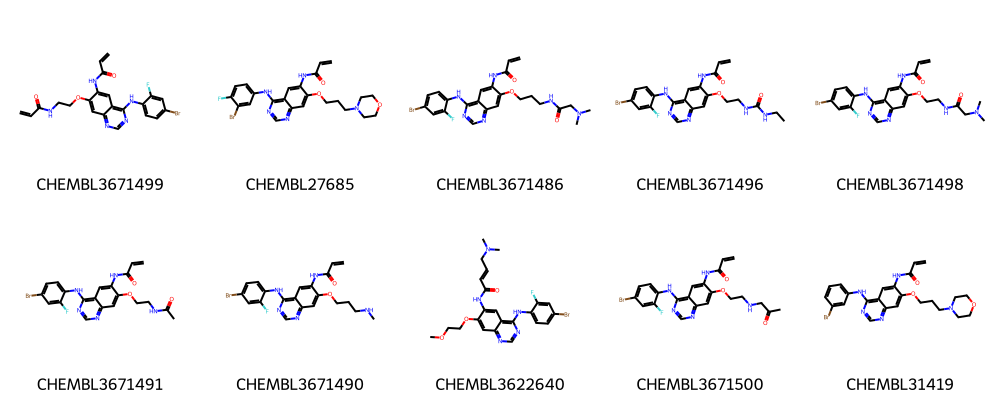
[16]:
# 保存最大簇中的分子以便其他教程使用
sdf_path = str(DATA / "molecule_set_largest_cluster.sdf")
sdf = Chem.SDWriter(sdf_path)
for index in clusters[0]:
mol, label = compounds[index]
# 将标签添加到元数据
mol.SetProp("_Name", label)
sdf.write(mol)
sdf.close()
第二大簇中的十个示例¶
[17]:
print("第二大簇中的十个分子：")
# Draw molecules
Draw.MolsToGridImage(
[compounds[i][0] for i in clusters[1][:10]],
legends=[compounds[i][1] for i in clusters[1][:10]],
molsPerRow=5,
)
Ten molecules from second largest cluster:
[17]:
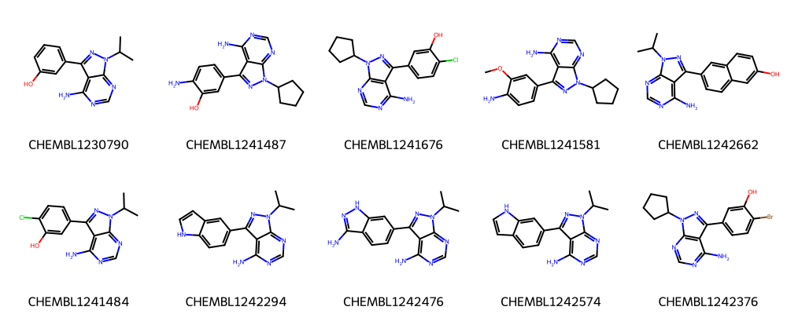
各簇中的前十个分子看起来确实相似，许多共享一个共同的骨架（通过目视检测）。
有关如何计算一组分子的最大公共子结构（MCS）的更多信息，请参见 教程 T006。
前 10 个簇的示例¶
为便于比较，我们查看前 10 个簇的簇中心。
[18]:
print("前 10 个簇中的十个分子：")
# Draw molecules
Draw.MolsToGridImage(
[compounds[clusters[i][0]][0] for i in range(10)],
legends=[compounds[clusters[i][0]][1] for i in range(10)],
molsPerRow=5,
)
Ten molecules from first 10 clusters:
[18]:
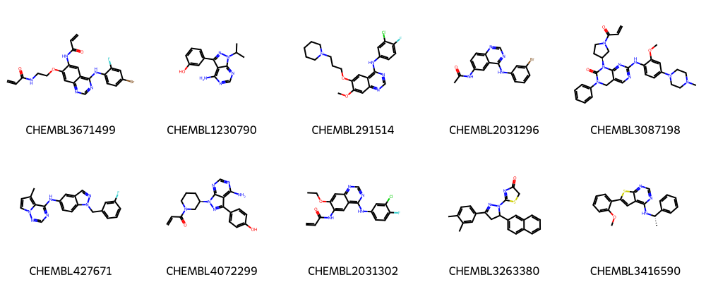
将前 3 个簇的簇中心保存为 SVG 文件。
[19]:
# 生成图像
img = Draw.MolsToGridImage(
[compounds[clusters[i][0]][0] for i in range(0, 3)],
legends=[f"Cluster {i}" for i in range(1, 4)],
subImgSize=(200, 200),
useSVG=True,
)
# 修补原始 SVG 数据：将不透明背景转换为透明背景并设置字体大小
molsvg = img.data.replace("opacity:1.0", "opacity:0.0").replace("12px", "20px")
# 将修改后的 SVG 数据保存到文件
with open(DATA / "cluster_representatives.svg", "w") as f:
f.write(molsvg)
虽然仍能看到一些相似之处，但很明显，不同簇的簇中心看起来比同一个簇内的化合物更不相似。
簇内 Tanimoto 相似性¶
我们还可以查看簇内的 Tanimoto 相似性。
[20]:
def intra_tanimoto(fps_clusters):
"""计算每个簇中所有指纹对的 Tanimoto 相似性的函数"""
intra_similarity = []
# 计算每个簇的内部相似性
for cluster in fps_clusters:
# 将 Tanimoto 距离矩阵转换为相似性矩阵（1 - 距离）
intra_similarity.append([1 - x for x in tanimoto_distance_matrix(cluster)])
return intra_similarity
[21]:
# 为前 10 个簇重新计算指纹
mol_fps_per_cluster = []
for cluster in clusters[:10]:
mol_fps_per_cluster.append([rdkit_gen.GetFingerprint(compounds[i][0]) for i in cluster])
# 计算簇内相似性
intra_sim = intra_tanimoto(mol_fps_per_cluster)
[22]:
# 绘制含簇内相似性的小提琴图
fig, ax = plt.subplots(figsize=(10, 5))
indices = list(range(10))
ax.set_xlabel("Cluster index")
ax.set_ylabel("Similarity")
ax.set_xticks(indices)
ax.set_xticklabels(indices)
ax.set_yticks(np.arange(0.6, 1.0, 0.1))
ax.set_title("Intra-cluster Tanimoto similarity", fontsize=13)
r = ax.violinplot(intra_sim, indices, showmeans=True, showmedians=True, showextrema=False)
r["cmeans"].set_color("red")
# mean=red, median=blue
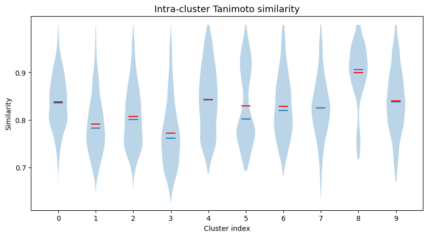
挑选最终的化合物列表¶
接下来，我们将挑选最终列表，最多包含 1000 个化合物，作为一个多样化的子集。
为此，我们从每个簇中取出簇中心（即每个簇中的第一个分子），然后对于每个簇（从最大的簇开始），取与簇中心最相似的 10 个分子（如果簇中剩余分子少于 10 个则取 50%），直到我们选择了最多 1000 个化合物。这样，我们有了每个簇的代表。
挑选化合物的目标是确保较小集合的多样性，这些化合物将被建议用于验证性测定实验中的测试。
如其中所述：这种方法背后的思想是确保多样性（每个簇的代表），同时从验证性测定的结果中获取 SAR（构效关系）信息（来自较大簇的保留的相当相似的分子组）。
获取簇中心。
[23]:
# 获取每个簇的簇中心（每个簇中的第一个分子）
cluster_centers = [compounds[c[0]] for c in clusters]
# 我们有多少个簇中心/簇？
print("Number of cluster centers:", len(cluster_centers))
# NBVAL_CHECK_OUTPUT
Number of cluster centers: 1128
按大小对簇进行排序，并按相似性对每个簇中的分子进行排序。
[24]:
# 根据分子与簇中心的相似性对簇内分子进行排序
# 并根据簇的大小对簇进行排序
sorted_clusters = []
for cluster in clusters:
if len(cluster) <= 1:
continue # Singletons
# else:
# 计算每个簇元素的指纹
sorted_fingerprints = [rdkit_gen.GetFingerprint(compounds[i][0]) for i in cluster]
# Similarity of all cluster members to the cluster center
similarities = DataStructs.BulkTanimotoSimilarity(
sorted_fingerprints[0], sorted_fingerprints[1:]
)
# Add index of the molecule to its similarity (centroid excluded!)
similarities = list(zip(similarities, cluster[1:]))
# Sort in descending order by similarity
similarities.sort(reverse=True)
# Save cluster size and index of molecules in clusters_sort
sorted_clusters.append((len(similarities), [i for _, i in similarities]))
# Sort in descending order by cluster size
sorted_clusters.sort(reverse=True)
最多挑选 1000 个化合物。
[25]:
# 计算已选分子数量，先选择簇中心
selected_molecules = cluster_centers.copy()
# 从最大的簇开始，取每个簇的 10 个分子（或最多 50%）
index = 0
pending = 1000 - len(selected_molecules)
while pending > 0 and index < len(sorted_clusters):
# 获取排序后的簇的索引
tmp_cluster = sorted_clusters[index][1]
# If the first cluster is > 10 big then take exactly 10 compounds
if sorted_clusters[index][0] > 10:
num_compounds = 10
# If smaller, take half of the molecules
else:
num_compounds = int(0.5 * len(tmp_cluster)) + 1
if num_compounds > pending:
num_compounds = pending
# Write picked molecules and their structures into list of lists called picked_fps
selected_molecules += [compounds[i] for i in tmp_cluster[:num_compounds]]
index += 1
pending = 1000 - len(selected_molecules)
print("# Selected molecules:", len(selected_molecules))
# NBVAL_CHECK_OUTPUT
# Selected molecules: 1128
这组多样化的分子现在可以用于实验测试。
附加：运行时间分析¶
在本教程的最后，我们可以尝试不同的数据集大小，看看 Butina 聚类的运行时间如何变化。
[26]:
# 复用旧数据集
sampled_mols = compounds.copy()
请注意，您可以尝试更大的数据集，但超过 10000 个数据点的数据大小已经开始消耗相当多的内存和时间（这就是为什么我们停在那里）。
[27]:
# 用于时间计算的辅助函数
def measure_runtime(sampled_mols):
start_time = time.time()
sampled_fingerprints = [rdkit_gen.GetFingerprint(m) for m, idx in sampled_mols]
# Run the clustering with the dataset
sampled_clusters = cluster_fingerprints(sampled_fingerprints, cutoff=0.3)
return time.time() - start_time
[28]:
len(sampled_mols)
# NBVAL_CHECK_OUTPUT
[28]:
4635
[29]:
sample_sizes = [100, 500, 1000, 2000, 4000]
runtimes = []
# Take random samples with replacement
for size in sample_sizes:
time_taken = measure_runtime(random.sample(sampled_mols, size))
print(f"Dataset size {size}, time {time_taken:4.2f} seconds")
runtimes.append(time_taken)
Dataset size 100, time 0.04 seconds
Dataset size 500, time 0.23 seconds
Dataset size 1000, time 0.53 seconds
Dataset size 2000, time 1.30 seconds
Dataset size 4000, time 3.48 seconds
[30]:
fig, ax = plt.subplots()
ax.set_title("Runtime measurement of Butina Clustering with different dataset sizes")
ax.set_xlabel("# Molecules in data set")
ax.set_ylabel("Runtime in seconds")
ax.plot(sample_sizes, runtimes, "g^");
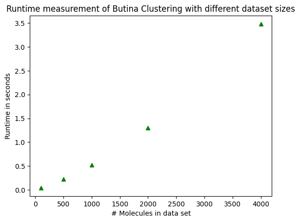
请注意运行时间与样本大小并非完全成正比！它增长得更快！
讨论¶
我们介绍了用于对化合物数据集进行聚类的 Butina 算法，并讨论了如何选择合理的聚类阈值。通过查看来自不同聚类的示例化合物并检查簇内相似性，我们对聚类结果进行了合理化分析。最后，使用这些聚类结果挑选了一个多样化的化合物子集。
测验¶
为什么分子聚类很重要？
你可以使用哪些算法来对一组分子进行聚类，这些算法背后的通用思想是什么？
你知道其他聚类算法吗？